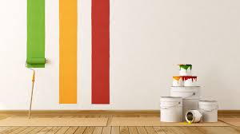

Investigating Non-Newtonian Fluids
.jpg)
After making your oobleck slime (aka non-newtonian fluid),
fllow these simple steps to investigate a non-newtonian fluid.
- Gently push your hand into the starch. You would realize that your hand passes through easily.
- Now try to punch it with your hand while being careful that the mixed cornstarch doesn’t splash out. You will feel the resistance offered by the starch as you do that since application of force (stress) changes the properties of this fluid to make it behave more like solid as explained earlier.
- If you have a small light rubber ball, you can actually see that ball bounce off the cornstarch if you drop it from some height over the fluid. If you drop it from point closer to the surface, the ball will rest on the fluid and slowly sink in.
Conclusions

This experiment demonstrates an interesting property of fluids that we see in everyday life. These properties are useful for certain applications. For example, this property helps when one wants the paint to flow readily off the brush when it is being applied to the surface being painted, but not to drip excessively. Another relevant fluid property in this class is evident by a ketchup which will not come out of the bottle until you stress it by shaking. This helps to control the flow of the ketchup. A practical application for non-Newtonian fluids may be in body armor of the future. Since such fluids are usually flexible, they would allow soldiers to move freely when not under attack. But if confronted with a speeding bullet, they would quickly harder, performing like traditional armor. More research is of course necessary to see if non-Newtonian fluids are suitable for similar applications, but until then, it's sure fun to play with.
This is an activity that supports state physical science standards, engages students, and opens the imagination to future applications. This activity is appropriate for all elementary levels with the follow-up varying at the teacher’s discretion for her scholastic level.
| Page 1 | Page 2 |